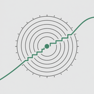
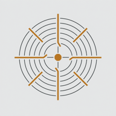

A patchable monophonic instrument built for touch, sound design and performance.
PLICATA is the first released instrument in the Trambustissimo family.
A compact analog-style voice built for hands-on synthesis: oscillator and interval sub,
audio-rate modulation, ladder filtering, a CV-driven wavefolder and an open patch system.
A morphing oscillator, interval SUB, wavefolder and resonant filter form the voice. The 28-socket
patch field opens audio, CV and events; the XY keyboard adds microtonal performance, and the
32-step arpeggiator turns held notes into programmable, mutable patterns.
The large surface is only the overview. These are the secondary systems that define how
PLICATA is stored, performed, transformed and learned. The images below come from the
latest packaged PLICATA interface, captured at iPad proportions.
PRESETS · MEMORY
01
Presets are complete product states.
The black preset display is the entry point to the library. Factory memories stay
immutable; User memories can capture the sound, macro values and patch state together.
All, Factory, User, Favorites and Recent views
Search, category and tag filtering
Save, Save As, Rename, Duplicate and Delete for User presets
GEN creates a new complete state without silently overwriting memory
ARP · PATTERN
02
Arpeggiator as a performance subsystem.
ARP goes beyond a simple up/down latch and exposes pattern, motion and performance editing.
Rate, mode, octave and hold controls
Advanced PLAY / PATTERN / PERFORMANCE pages
Pattern banks and direct pattern editing
Mutation, freeze and scene-oriented workflows
PERF · XY KEYBOARD
03
A dedicated expressive playing surface.
The thirteen chromatic keys carry vertical mappings and continuous horizontal bend behavior.
Per-key vertical mappings
Continuous X bend sensor rail
Microtonal tuning and keyboard-map presets
MIDI pitch-bend output with configurable range
EXT · FLAVOUR
04
Character controls are separated by function.
FLAVOUR is not a single “analog” amount. PLICATA separates moving variation, static mismatch and saturation stages.
DRIFT for slow deterministic correlated movement
TOLERANCE for a fixed component-mismatch fingerprint
FILTER DRIVE, FOLD DRIVE and post-VCA AMP SAT
Velocity response, sync detail and six bounded macros
SIG · IGNITE
05
One macro, an editable target map.
IGNITE is the visible signature control; SIG opens the mapping layer that defines what that gesture actually does.
Multiple macro targets
Independent LOW / HIGH ranges
Linear or logarithmic mapping
Signature-map memories stay separate from sound presets
GUIDE · REFERENCE
06
The instrument explains its own architecture.
The built-in GUIDE is a real reference layer, not a tooltip tour. It documents the signal path and product-specific workflows.
Quick start and signal-flow chapters
Patch-service and preset-management references
SIG / EXT and troubleshooting chapters
Privacy and support information inside the product
02 / 07
Semi-modular sequencer synth

MONODIA 32
A single-oscillator instrument where synthesis and sequencing are designed as one system:
a 32-step timeline, deep pattern memory, assignable control voltage and a wide patch field.
Sound and sequence memory stay independent: a voice can remain fixed while patterns move through
64 slots. The 32-step sequencer keeps note, gate, accent, glide and ratchet data visible, while
ASSIGN turns clock, sequence or MIDI information into control voltage.
A voice, a sequence workstation and a patch system.
MONODIA's secondary surfaces separate composition, recall, routing and character without
moving those decisions into generic settings pages. Each view below is isolated directly
from the canonical Module Lab surface and remains read-only on this page.
Loading sequencer…
PAT / SEQ · ASSIGN
01
Thirty-two steps remain directly editable.
The PAT workspace keeps sequence data visible as performance data rather than hiding it behind a piano-roll editor.
Two banks: steps 01–16 and 17–32
Note, gate, rest, accent, glide and ratchet lanes
Length, direction, random, transpose and swing controls
ASSIGN turns sequence, clock or MIDI data into one of 16 CV sources
Loading sequence slot…
SEQUENCE SLOT · MEMORY
02
Pattern recall is separate from sound recall.
Sequence Slot keeps rhythmic and melodic memory independent from the timbral preset bank.
Dedicated sequence-slot recall and storage
64 pattern locations in the full sequence-memory system
Manual, auto-save and write-protect workflows
MIDI-driven pattern recall can stay independent from the sound preset
Loading patch service…
PATCH · 32 SOCKETS
03
The sequencer can leave the instrument.
The 32-socket patch service exposes the voice, timing and performance data as a semi-modular system.
Oscillator, filter, VCA, LFO and envelope I/O
Tempo, run/stop and reset patch control
KB, GATE and ASSIGN performance outputs
Utility MULT and voltage-controlled mixing
Loading flavour…
EXT · FLAVOUR
04
Character lives outside the core voice panel.
FLAVOUR extends the subtractive voice without turning the main surface into a second configuration screen.
Ladder, mixer and post-drive character controls
Feedback and nonlinear coloration remain explicitly separated
Character changes can be recalled with the product state
EXT also hosts clock, MIDI and performance setup
Loading signature map…
SIG · SURGE
05
SURGE is a macro with an inspectable map.
SIG exposes the targets behind the signature gesture instead of treating a macro as an unexplained black box.
Editable multi-target signature mapping
Target ranges remain visible and bounded
Signature behavior is separated from ordinary performance macros
Macro mapping can evolve without rewriting the core voice architecture
Loading guide…
GUIDE · REFERENCE
06
The reference layer documents the systems separately.
MONODIA's GUIDE explains voice, sequencing, clocks, memory, ASSIGN and patching as distinct but connected domains.
Voice-first quick start and performance guidance
32-step editing and clock-authority chapters
64-location memory and ASSIGN references
Patchbay and troubleshooting documentation
03 / 07
Percussion synthesizer

BATTUTA 8
A percussive instrument built around two wide-range oscillators, fast independent envelopes
and an eight-step pitch-and-velocity sequencer designed for animated rhythmic sound.
Two wide-range oscillators, noise, one-shot envelopes and a resonant filter form a percussive
voice that can be played directly or driven by its eight-step pitch-and-velocity sequencer.
Patch I/O lets the same machine act as drum voice, modulation source or compact CV sequencer.
A harmonic sequencer built from divided clocks, integer relationships and interlocking
rhythms. Two pitch lanes generate a six-voice field that can move as one or pull apart.
Two four-step pitch lanes, four rhythm generators and integer-derived divisions share one clock
without collapsing into one cycle. The result moves between chordal instrument, polyrhythmic
sequencer and a source of related pitch and clock CV.
A spectral transfer instrument that moves between vocoding, animated filter-bank work and
resynthesis. Ten-band immediacy can expand into a higher-resolution twenty-band engine.
SPETTRA treats sound as a moving spectral shape. CLASSIC 10 keeps the transfer immediate;
PRO 20 increases resolution for detailed vocoding, filter-bank animation and more abstract
spectral motion with internal or external carriers.
CLASSIC 10 + PRO 20 engines
Vocoder + spectral-transfer workflows
Multi-band analysis / synthesis banks
Spectral shift + animated bands
Internal or external carrier / sidechain
In development
Targets
iPhoneiPad
Formats
StandaloneAUv3
Mode
Audio effect
Planned
VST3 · Windows + macOS
Desktop VST3 licensePerpetual · Windows + macOS · 3 computers · offline after activation
A dual polymetric instrument for controlled mutation. Two interacting lanes feed a synthesis
engine built for instability, cross-modulation, folding and evolving resonant motion.
Two polymetric sequencers mutate repeatably rather than randomly, then feed TZFM, ring
modulation, wavefolding and dual resonant filters. Pattern structure and timbre evolve together,
while PERF exposes fast variation without hiding the underlying lanes.
An independent six-voice percussion instrument inspired by the Nord Drum 2's six-channel
percussion architecture, expanded around touch, live variation and precise rhythmic editing.
Six independent voices combine tone, noise and click synthesis. CAMPO explores rhythm through
a continuous XY field; WRITE exposes six detailed lanes; LIBRARY keeps LIVE, QUEUED and EDIT
states explicit while patterns are performed and revised.
Six independent percussion voices
Tone / noise / click synthesis
CAMPO continuous XY rhythm field
WRITE six-lane step editor
Visual pattern library + MIDI tools
In development
Targets
iPhoneiPad
Formats
StandaloneAUv3
Current
Native qualification
Planned
VST3 · Windows + macOS
Desktop VST3 in developmentWindows and macOS delivery and licensing are being qualified.
Interactive Web preview · iOS AUv3 verified on Simulator